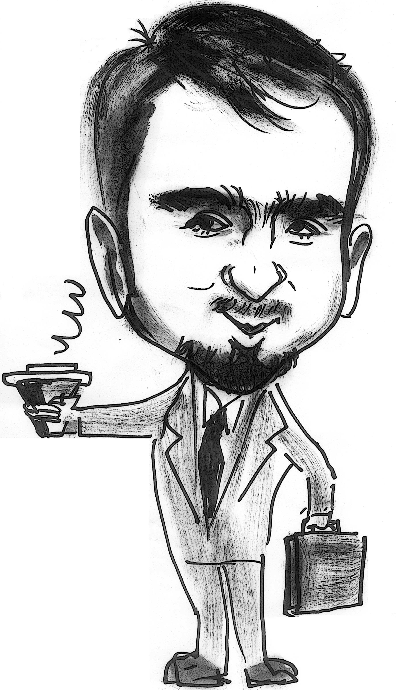

Short Biography
" width="20%" align="right" hspace="10pt"/>I started my journey into the wonderful realm of computing when I joined Allameh Helli middle-school, affiliated with the National Organization for Development of Exceptional Talents. I learned the foundations of programming using Basic and Pascal, and then shifted to C/ C++ when I joined high-school. During my junior year in high-school, I have implemented an IPX-based framework for cluster computing, which won the prestigious national Kharazmi award in the 4th annual Kharazmi Youth Festival, 2002. Later, I have improved over my initial implementation and received the intellectual property for it in 2004.
Parallel to my research on parallel/ distributed computing, I got interested in robotics and participated in my first Robocup competition in 2003, Padova, Italy. After graduating from high-school, we started the only independent team, named Satrap, with members crossing different institutions and actively participated in Robocup competitions from 2005, Osaka, Japan till 2007, GA, USA.
Joining University of Tehran in 2004 marked a drastic shift in my line of research. As part of the Center of Excellence in Bioinformatics, I started my first systems biology paper in collaboration with a Ph.D. student in our lab. The goal of our project was to design and implement an efficient method for enumerating network motifs, which resulted in a well-cited publication and highly used software package called Kavosh.
Prior to joining Purdue in 2010, I have been awarded direct admission to the graduate program in our school. However, I decided to start a small company together with a couple of friends to provide customized Bluetooth-based solutions for clients. During the year that I was working there as project manager, we have implemented a distributed Obex-based Bluetooth advertisement system, and an automated museum tour guide using an integrated RFID-Bluetooth technology for the National Museum of Ancient Iran. Soon I discovered that there was a missing element in my work, and decided to join Purdue as a graduate student to be involved in deeper scientific research.
As a graduate student at Purdue, I work under supervision of Ananth Grama and Wojciech Szpankowski, and collaborate closely with Shankar Subramaniam, Mehmet Koyuturk, and Andrea Goldsmith. I received my Master's degree in Computer Science from Purdue University in Dec. 2012 and am currently a PhD candidate at Purdue. My current research spans different areas of Bioinformatics/ Systems Biology and aims to develop computational methods coupled with statistical models for problems ranging from network alignment to insilico deconvolution of mixed expression profiles. For a detailed summary, please visit my Research Summary page.